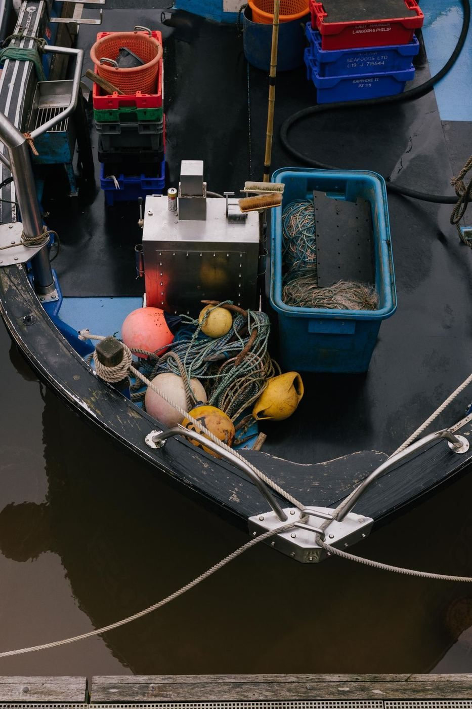
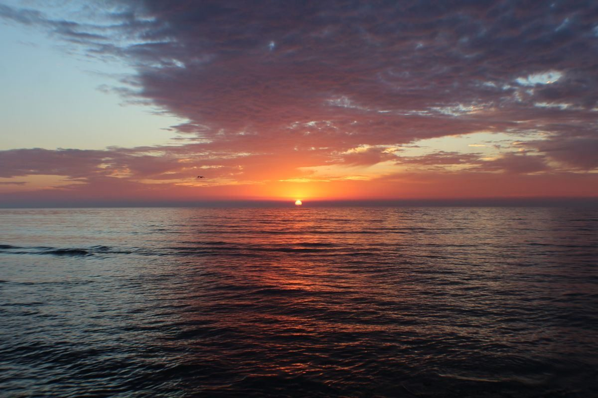

On the water



Biloxi, Mississippi
A fishing charter in Biloxi, in the Gulfport to Pensacola corridor, offering half-day or full-day trips for 1 to 5 persons, inshore and nearshore, for Speckled Trout, Redfish, and Atlantic Kingfish, with Captain Bill, 30 years on the Mississippi Gulf Coast.
Dominator Fishing Charters is a fishing charter in Biloxi run by Captain Bill, with 30 years on the Mississippi Gulf Coast. Trips run half-day or full-day for 1 to 5 persons, inshore and nearshore, for Speckled Trout, Redfish, and Atlantic Kingfish. Boats listed include a 27-foot sportfisherman with cabin and restroom and a 26-foot Mako center console, per FishingBooker. License, tackle, and bait are included, and catch cleaning is offered.

151 Beach Blvd, Biloxi, MS
Trips booked by phone. No storefront hours are published.